Cook with us, from farm to table.
The real cooking class of Italy is the Sunday lunch. It is where every Sicilian learns to cook: beside a grandmother who shares her best recipes, shows how to cut the vegetables, and teaches you to recognize a good ingredient. For one whole day, you cook with us the same way.
The famous Sicilian starters, and more.
In one day we cook 10 to 15 dishes together, the way a grandmother taught them: hands-on, side by side. Nothing comes from a book.
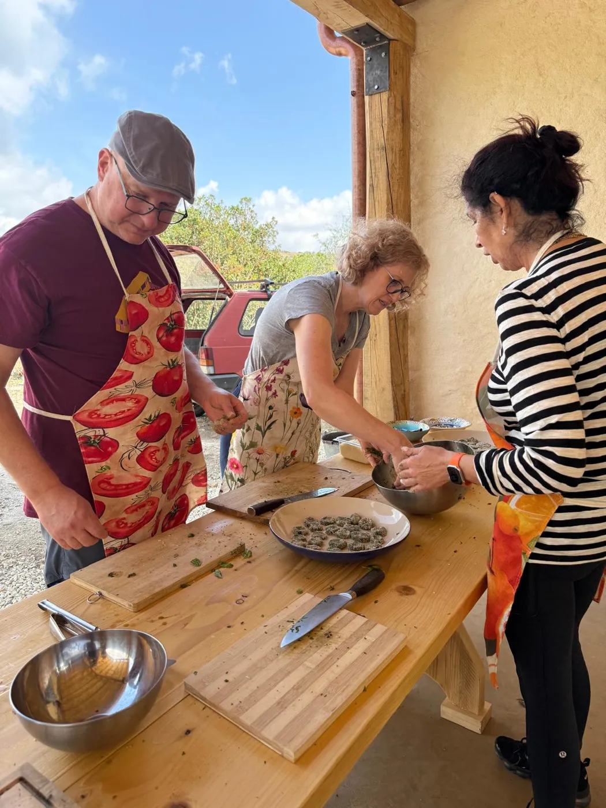
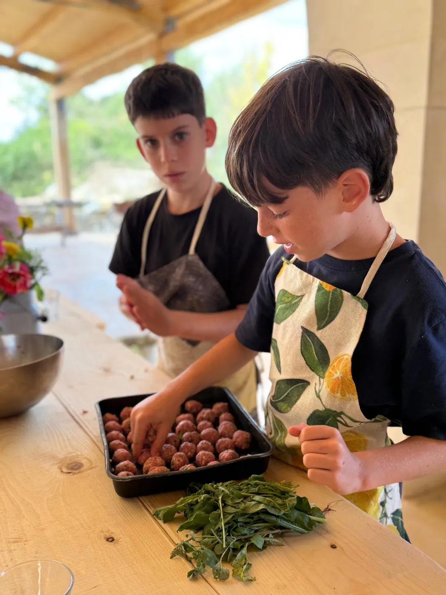
Start with what grows wild.
We gather wild fennel and herbs from the land and turn them into fritters, a Sicilian classic. You also learn to recognize a good tomato, a good olive oil, a good cheese.


How to cut the vegetables.
Our grandmothers taught with their hands. We show you how each vegetable is cut, and why.
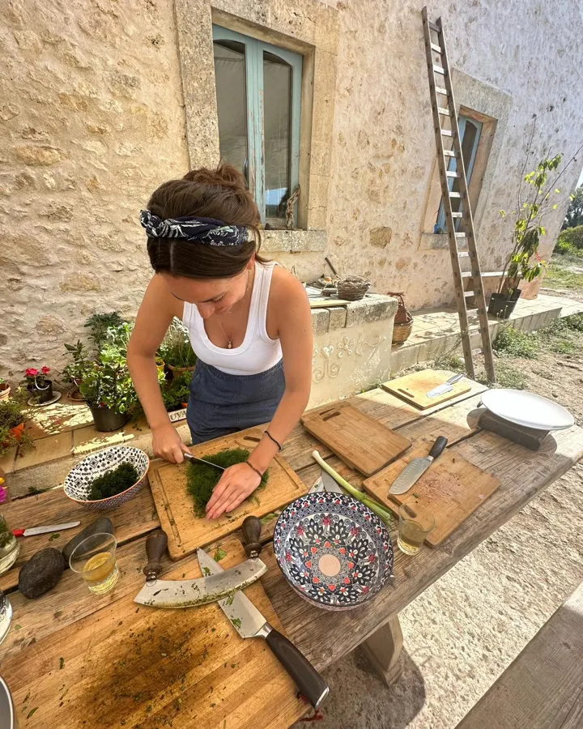
Our grandmothers’ secrets of the fire.
Peppers, zucchini, radicchio and more, cooked over an open wood fire. We show you how to light it, how to read it, and when to take the food off.
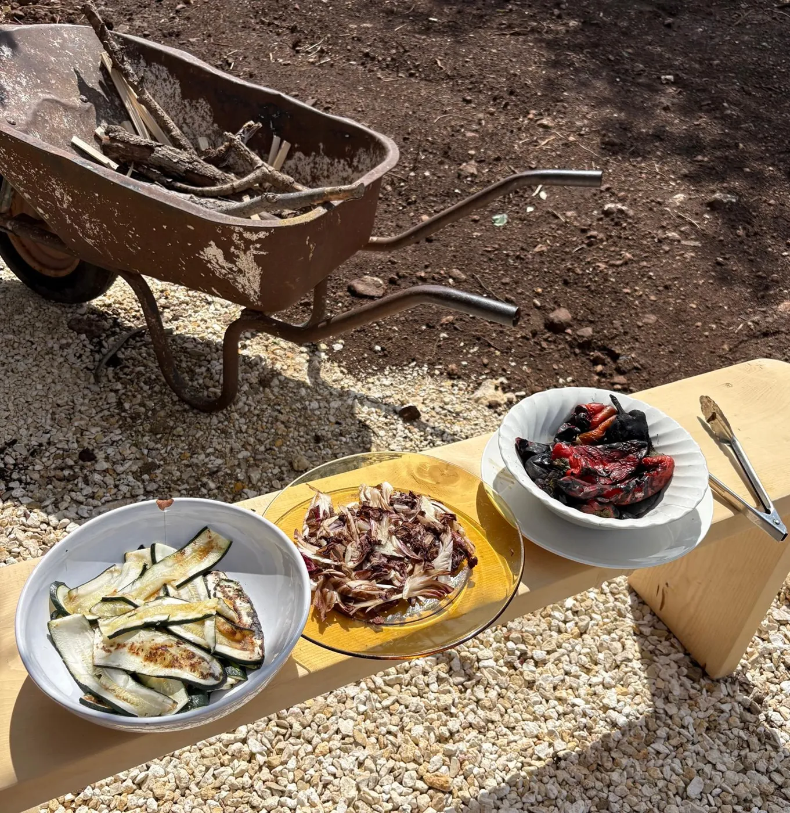
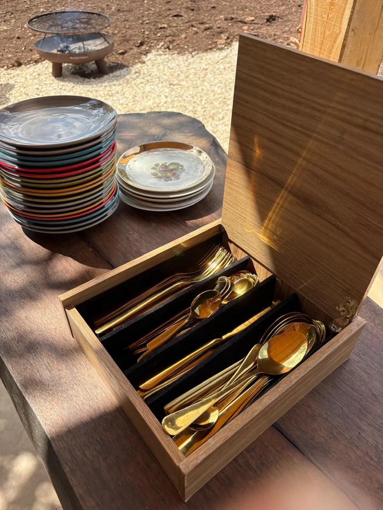
From wheat to ravioli.
Grind heirloom wheat into flour at our stone mill, then join the ravioli workshop: roll, fill and stamp your own, grandma style.
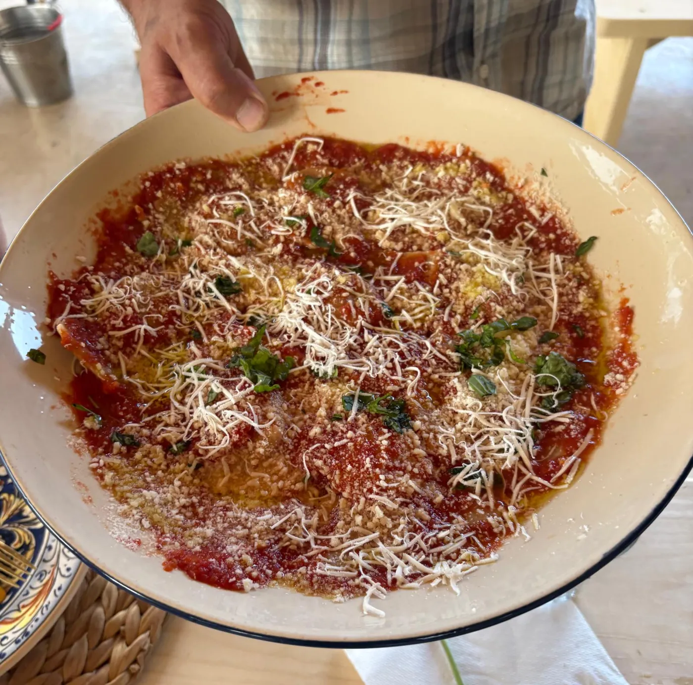
Then we eat what we cooked.
Everything you made goes to one long table.

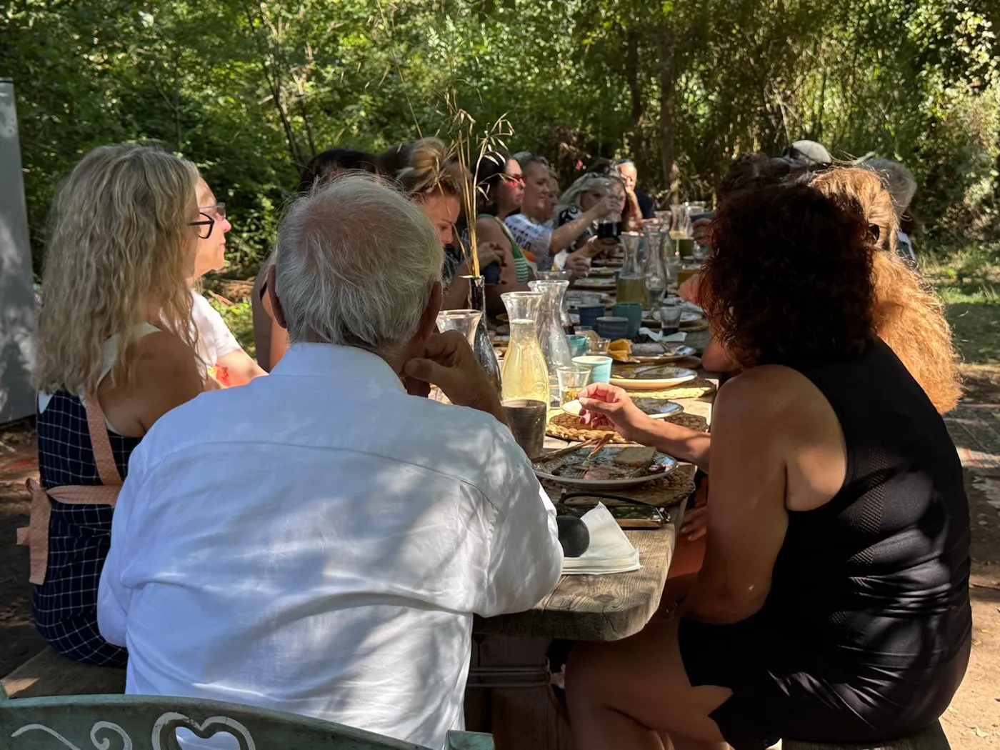
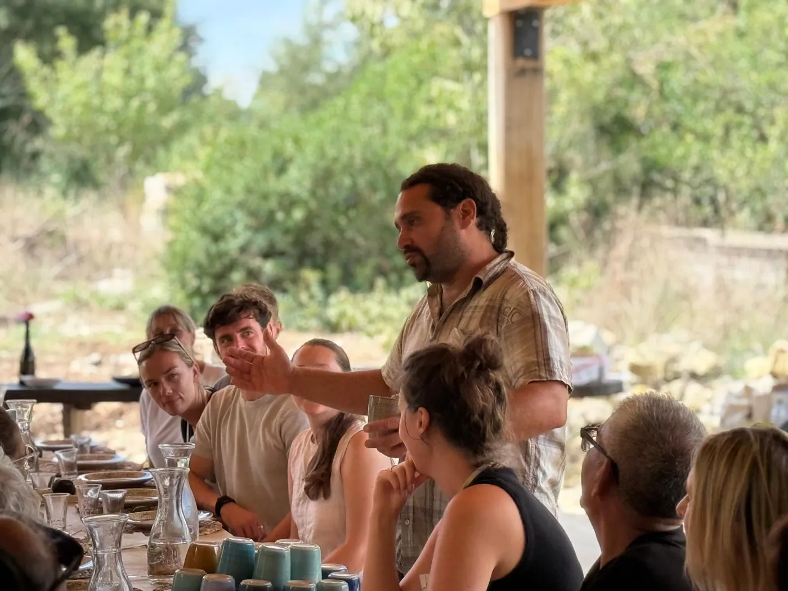
This is not a cooking school with stations and timers. It is a family kitchen, and you take the recipes home.
The celebration of the Sunday lunchAt a glance
Choose your date
See the days that are open and book right here.
Calendar not showing? Open the booking page.
Follow our days on the farm


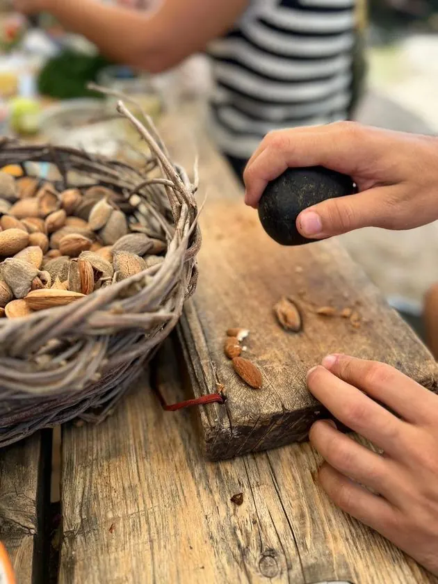


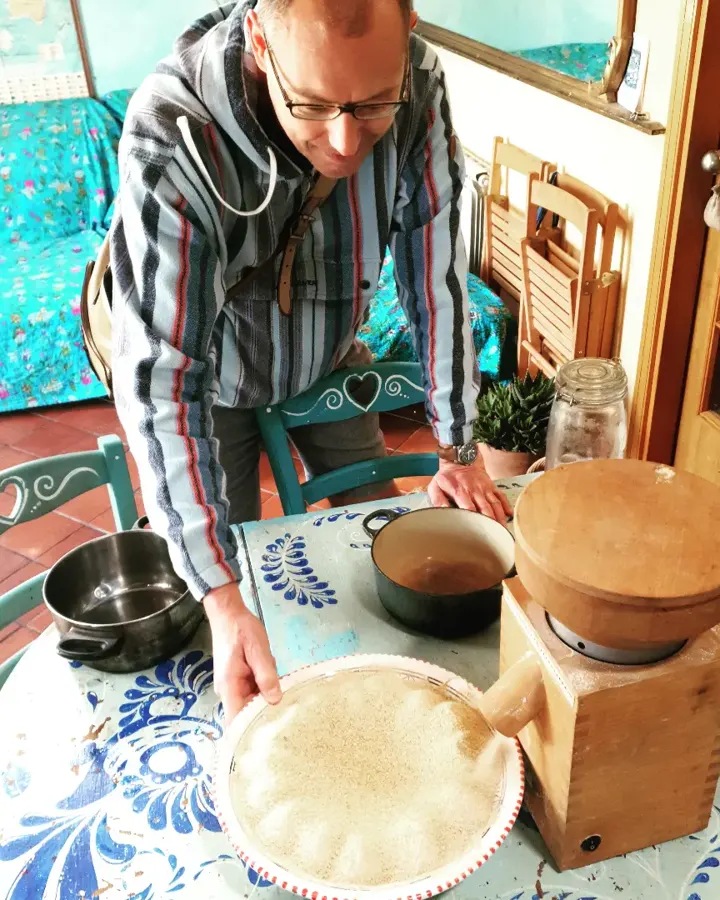
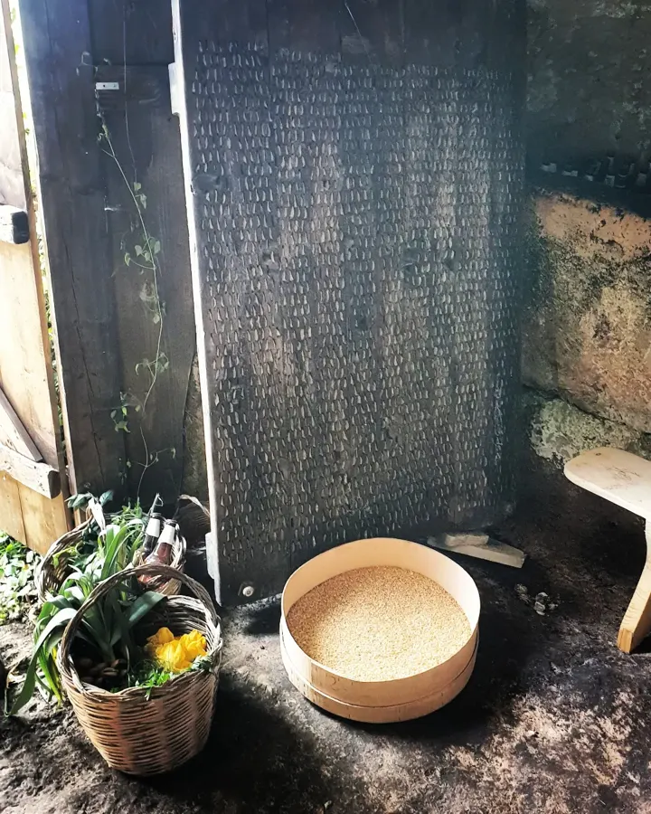
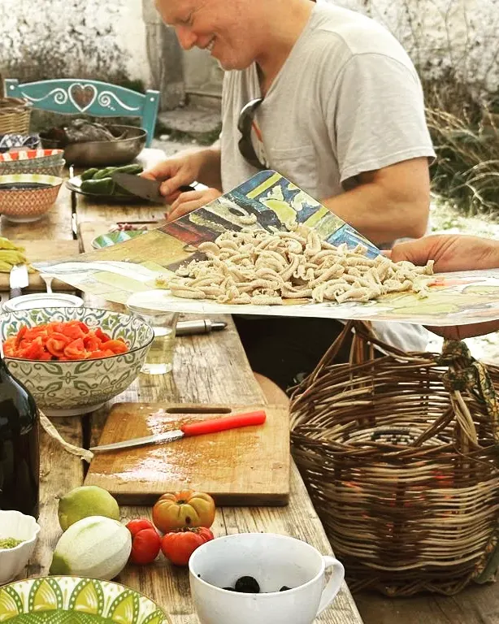
There is a seat for you at our table.
Sunday lunch, served every day of the week. Choose your date and we will send everything you need.